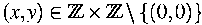
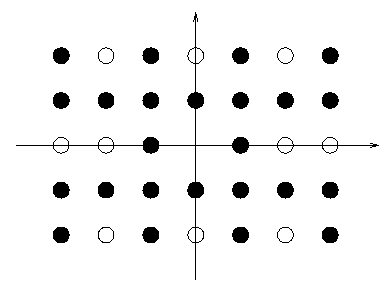
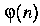
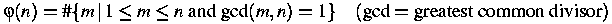
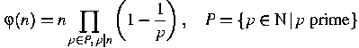
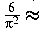

The
saying ``You can't see the wood for the trees'' is not only a cliche, but is also
incorrect. The real problem is that you can't see the trees for the wood. If
you stand in the middle of a wood, the trees tend to obscure each other and the
number of distinct trees you can actually see is quite small. This is
especially true if the trees are planted in rows and columns, because they tend
to line up. The purpose of this problem is to find how many distinct trees one
can see if one were standing on the position of a tree in the middle of the
wood.
For a
mathematically more precise description we assume that you are situated at the
origin of a coordinate system in the plane.
Trees
are planted at all positions , with
and .

A tree
at position can be seen from the origin if
there are no other trees on the straight line from
to . Find the number
of all the trees in the wood that can be seen from the origin and the number
of all the trees to compute the fraction .
Hint: The Euler phi function is
defined to be the number of integers in the range
relatively prime to :

Instead
of counting (an adequate method for small !) you
could as well use the following identity:

Hint: Remember that
You
might be surprised that the fraction converges to 0.607927
for an infinitely large wood.
Each
scenario consists of a line with the two numbers
and (separated by a white space), with and
Input is terminated by a line with two zeros.
For
each scenario print a line containing the fraction with a precision
of 7 digits after the decimal point. Error less than 2e-7 or 2*10^(-7) will be
tolerated.
3 2
0 0